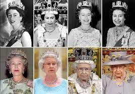
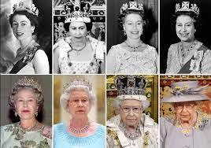
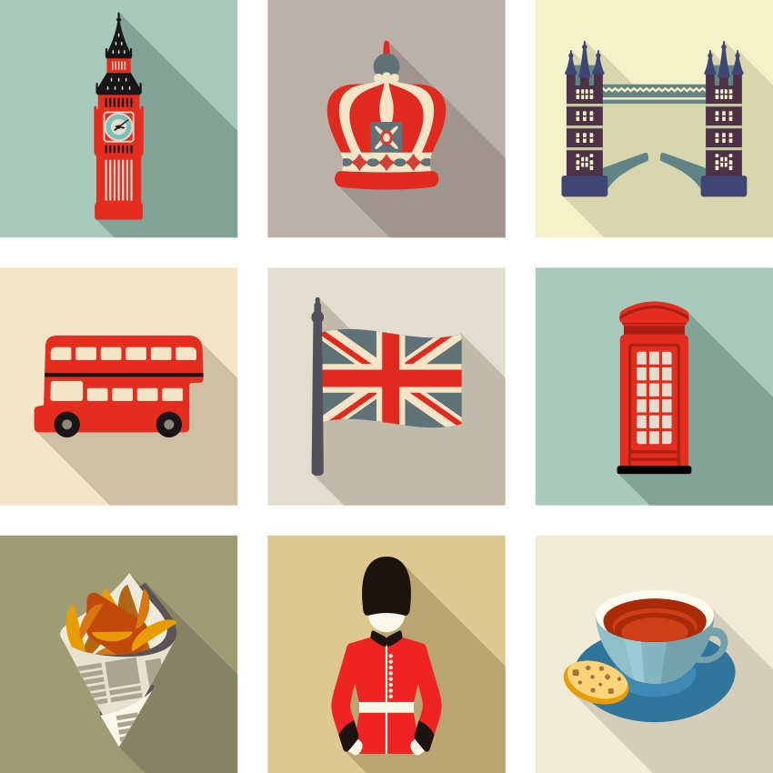
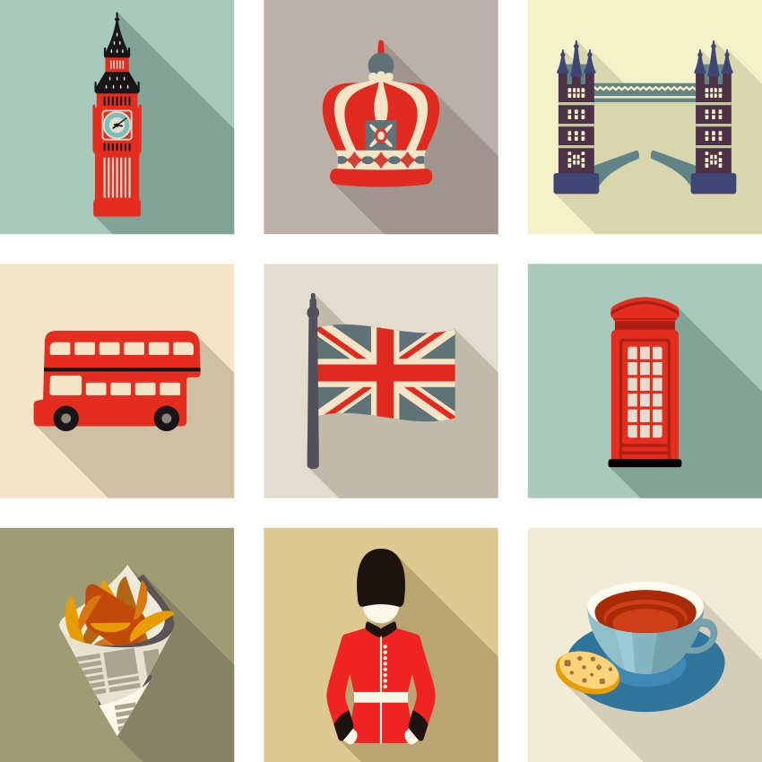
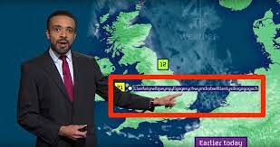
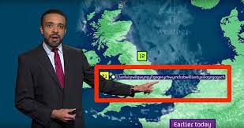
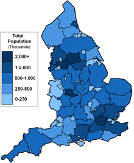
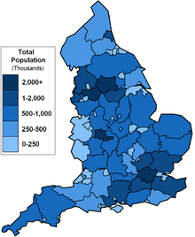

UK
TOPICS COVERED
LOCATION
GOVERNMENT
ATTRACTIONS
CULTURE
CURIOSITY
HISTORY
POPULATION
HISTORY
ㅤ The history of the United Kingdom, taking into account each of its nations separately, begins with the occupation of the Celts, in the British Isles, and unfolds, from then on, in a series of foreign domains, among which stand out the periods in which it was under the Roman Empire and the Anglo-Saxon.
These exerted greater influence on England and the other countries that make up the United Kingdom today, being at the core of its socioeconomic and political composition.
ㅤAs a political union, the United Kingdom came into existence in 1707, through the Agreement of Union 1707, which unified the parliaments of England and Scotland and created the sovereign state of the United Kingdom of Great Britain, even without Northern Ireland. The joining of the kingdoms of England and Wales had taken place a few years earlier, between 1535 and 1542. In the early 19th century, more specifically in 1801, the union officially became the United Kingdom of Great Britain and Northern Ireland , with its integration.
ㅤMany important events that had a profound impact on history took place in the United Kingdom, among which the Industrial Revolution, which took place from the 18th century onwards, stands out. With great structural and economic advances, the United Kingdom today brings together some of the most developed nations in the world, still occupying the position of the second largest economy on the European continent.
ㅤAs a political union, the United Kingdom came into existence in 1707, through the Agreement of Union 1707, which unified the parliaments of England and Scotland and created the sovereign state of the United Kingdom of Great Britain, even without Northern Ireland. The joining of the kingdoms of England and Wales had taken place a few years earlier, between 1535 and 1542. In the early 19th century, more specifically in 1801, the union officially became the United Kingdom of Great Britain and Northern Ireland , with its integration.
ㅤMany important events that had a profound impact on history took place in the United Kingdom, among which the Industrial Revolution, which took place from the 18th century onwards, stands out. With great structural and economic advances, the United Kingdom today brings together some of the most developed nations in the world, still occupying the position of the second largest economy on the European continent.
LOCATION
ㅤThe United Kingdom is a political union made up of four countries: England, Wales and Scotland, located on the island of Great Britain, and Northern Ireland, located on the island of Ireland. Together, they bring together more than 67 million in inhabitants, forming the second largest economy on the European continent.
ㅤThis set of countries occupies an area of 242,495 km², more than 53% of which corresponds to the territory of England. Its coast is bathed by the North and Irish Seas, which are part of the Atlantic Ocean, and is separated from mainland Europe by the English Channel, which lies to the southeast.
ㅤThis set of countries occupies an area of 242,495 km², more than 53% of which corresponds to the territory of England. Its coast is bathed by the North and Irish Seas, which are part of the Atlantic Ocean, and is separated from mainland Europe by the English Channel, which lies to the southeast.
GOVERNMENT
ㅤThe system of government adopted in the United Kingdom and still in force is the parliamentary constitutional monarchy. The Queen is the main representative of the Executive Branch (head of state) and exercises this function over all four countries belonging to the union.
ㅤThe succession of office is through heredity. The current monarch's successor is her eldest son. Queen Elizabeth II (1926) has been the Queen of England since the age of 25. She was the longest-serving British monarch on the throne. On February 6, 2022, she completed 70 years of reign and celebrated the Platinum Jubilee. She died on September 8, 2022 at Balmoral Castle in Scotland. 
ㅤThe succession of office is through heredity. The current monarch's successor is her eldest son. Queen Elizabeth II (1926) has been the Queen of England since the age of 25. She was the longest-serving British monarch on the throne. On February 6, 2022, she completed 70 years of reign and celebrated the Platinum Jubilee. She died on September 8, 2022 at Balmoral Castle in Scotland. 
CULTURE
ㅤThe United Kingdom has always been a country of great importance and relevance when it comes to geopolitical and economic issues. As well as, it gave life to great reference names, such as Geoffrey of Monmouth, William Shakespeare, Virginia Woolf, George Orwell and great music stars.
ㅤEspecially because the traditions of the United Kingdom compile accomplishments of many years and that will never be forgotten. In addition, the country gives a lot of value to culture and its maintenance. Being an inclusive economic source for the nation. One of its greatest traditions: The British are known for their unconditional love of five o'clock tea, for being the creators of football, their fanaticism for cricket - one of the quintessential English sports - and for rugby. 
ㅤEspecially because the traditions of the United Kingdom compile accomplishments of many years and that will never be forgotten. In addition, the country gives a lot of value to culture and its maintenance. Being an inclusive economic source for the nation. One of its greatest traditions: The British are known for their unconditional love of five o'clock tea, for being the creators of football, their fanaticism for cricket - one of the quintessential English sports - and for rugby. 
CURIOSITY
ㅤ-The United Kingdom does not have a written constitution, composed of a single document, like the constitution of Brazil.
ㅤ-Royal weddings are treated as national holidays in the UK.
ㅤ-Golf is a typically Scottish sport and has its origins in that country.
ㅤ-London is the most expensive city to live in the UK.
ㅤ-Wales has the most castles per square kilometer of any country in the world.
ㅤ-The city with the second longest name in the world is in Wales. It's called Llanfairpwllgwyngyllgogerychwyrndrobwllllantysiliogogogoch. It is estimated that its population is 3 thousand inhabitants.
ㅤ-The Stonehenge monument is one of the oldest architectural works ever built. It dates from the Neolithic period. 
ㅤ-Royal weddings are treated as national holidays in the UK.
ㅤ-Golf is a typically Scottish sport and has its origins in that country.
ㅤ-London is the most expensive city to live in the UK.
ㅤ-Wales has the most castles per square kilometer of any country in the world.
ㅤ-The city with the second longest name in the world is in Wales. It's called Llanfairpwllgwyngyllgogerychwyrndrobwllllantysiliogogogoch. It is estimated that its population is 3 thousand inhabitants.
ㅤ-The Stonehenge monument is one of the oldest architectural works ever built. It dates from the Neolithic period. 
POPULATION
ㅤIn the years 1960 to 2021, the population in the United Kingdom increased from 52.40 million to 67.33 million inhabitants. This means an increase of 28.5 percent in 61 years.
ㅤThe biggest increase was registered in 1962 with 0.85%. The biggest drop in 1982 with -0.04%. During the same period, the total population of all countries in the world increased by 160.2 percent. The average age in the UK increased by 0.53 years from 2012 to 2021, from 40.07 to 40.60 years (median value). About 84% of the inhabitants live in the country's big cities. This growing trend of urbanization is increasing by 0.7% per year. 
ㅤThe biggest increase was registered in 1962 with 0.85%. The biggest drop in 1982 with -0.04%. During the same period, the total population of all countries in the world increased by 160.2 percent. The average age in the UK increased by 0.53 years from 2012 to 2021, from 40.07 to 40.60 years (median value). About 84% of the inhabitants live in the country's big cities. This growing trend of urbanization is increasing by 0.7% per year. 
ATTRACTIONS